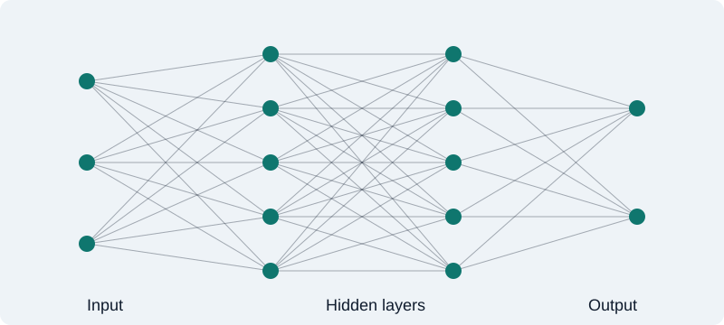

Artificial intelligence has moved from research labs into phones, hospitals, and classrooms. In just a few years, software went from sorting photos to holding conversations.
A short history
The idea is older than most people think. In 1950, Alan Turing asked whether machines can think. The term "artificial intelligence" was coined at a 1956 workshop at Dartmouth College. Progress then came in waves, with big promises followed by quiet years.
| Year | Milestone |
|---|---|
| 1950 | Turing publishes "Computing Machinery and Intelligence" |
| 1956 | The Dartmouth workshop names the field |
| 1997 | Deep Blue defeats chess champion Garry Kasparov |
| 2012 | AlexNet wins ImageNet and deep learning takes off |
| 2016 | AlphaGo beats Go champion Lee Sedol |
| 2017 | The Transformer architecture is introduced |
| 2022 | ChatGPT brings AI chat to the public |
How it works
Modern AI is built on neural networks: layers of simple units that learn patterns from data. Instead of following hand-written rules, the system adjusts millions of numbers until its answers improve.

The question is not whether machines will change our work, but how we will shape that change.
Where AI is changing life
Health
Helping doctors read scans and discover new medicines.
Education
Personal tutors that explain ideas at each student's pace.
Work
Tools that draft, translate, and write code in seconds.
The road ahead
With new power come new questions. Experts discuss:
- Protecting privacy and personal data
- Reducing bias in automated decisions
- Preparing workers for new kinds of jobs
- Making sure AI is safe and accountable
Learn more at Anthropic.